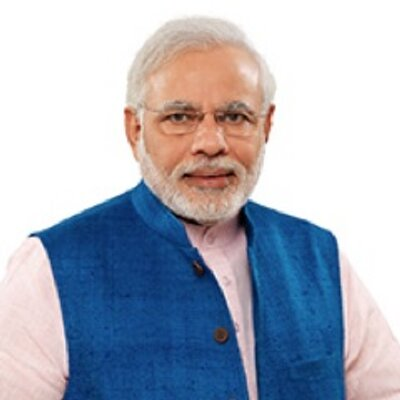

Modi, a leader of the Bharatiya Janata Party, was the Chief Minister of Gujarat from 2001 to 2014 and is the Member of Parliament from Varanasi.
Narendra Modi
Modi, a leader of the Bharatiya Janata Party, was the Chief Minister of Gujarat from 2001 to 2014 and is the Member of Parliament from Varanasi.
- Born: September 17, 1950 (age 64), Vadnagar
- Spouse: Jashodaben Modi
- Education: Gujarat University (1983), University of Delhi (1978)
- Parents: Heeraben Modi, Damodardas Mulchand Modi
- Awards: CNN-IBN Indian of the Year

Rahul Gandhi
Rahul Gandhi; is the Vice-President of the Indian National Congress party and the Chairperson of the Indian Youth Congress and the National Students Union of India.
- Born: June 19, 1970 (age 44), New Delhi
- Full name: Rahul Gandhi
- Parents: Sonia Gandhi, Rajiv Gandhi
- Siblings: Priyanka Gandhi
- Education: Trinity College, Cambridge (1994–1995)
- Awards: CNN-IBN Indian of the Year in Politics

M K Stalin
M. K. Stalin, the current President of the Dravida Munnetra Kazhagam (DMK) political party and the opposition leader in the Tamil Nadu Legislative Assembly since 25 May 2016.
- Born: March 1, 1953 (age 68),
Chennai.
- Spouse: Durga Stalin
- Education: Bachelor of Arts
- Parents: M. Karunanidhi, Dayalu Ammal
- Awards: First politician from Tamil Nadu to receive the honorary ‘Kentucky Colonel’ Award
Edappadi K. Palaniswami
Edappadi K. Palaniswami, popularly known as E.P.S, the current Chief Minister of Tamil Nadu since 16 February 2017, and the joint coordinator of the All India Anna Dravida Munnetra Kazhagam (AIADMK).
- Born: May 12, 1954 (age 66),
Siluvampalayam,Salem.
- Spouse: Radha Palaniswami
- Education: 12th Pass
- Parents: Karuppa Gounder, Thavasi Ammal
- Awards: Paul Harris Fellow Award(2020)
Seeman
Seeman, former filmmaker, Tamil Nationalist ideologue and the chief-coordinator of the political party Naam Tamilar Katchi.
- Born: November 8, 1966 (age 54), Aranaiyur
- Spouse: Kayalvizhi
- Education: Graduate
- Parents: Senthamizhan, Annamal
Vijayakanth
Vijayakanth, former film actor, and the founder and general secretary of the Desiya Murpokku Dravida Kazhagam (DMDK) Political party. He was the Leader of the Opposition in the Tamil Nadu Legislative Assembly from 2011 to 2016.
- Born: August 25, 1952 (age 68), Thirumangalam, Madurai
- Spouse: Premalatha
- Parents: Alagarswami, Aandal
- Education: 10th Pass
- Awards: Kalaimamani (2001), Best Indian Citizen Award (2001)

Kamal Haasan
Kamal Haasan, actor, dancer, film director, screenwriter, producer, playback singer, lyricist and politician who launched his political party, Makkal Needhi Maiam, in February 21, 2018.
- Born: November 7, 1954 (age 66),
Ramanathapuram.
- Spouse: Vani Ganapathy (m. 1978; div. 1988), Sarika (m. 1988; div. 2004)
- Parents: Srinivasan, Rajalakshmi
- Awards: Padma Shri (1990), Padma Bhushan (2014), Prix-Henri Lanlois French Award (2016), Chevalier Award (2016)